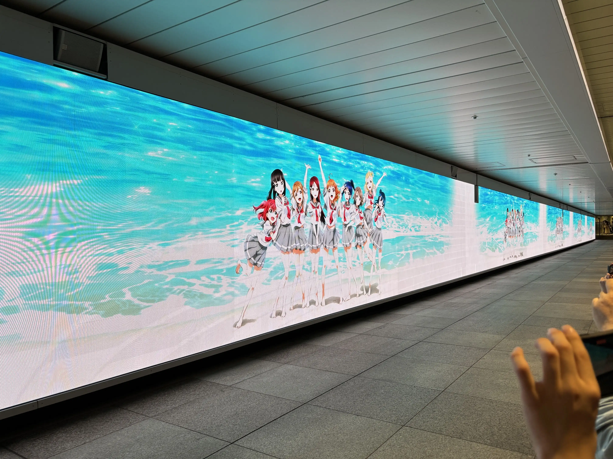
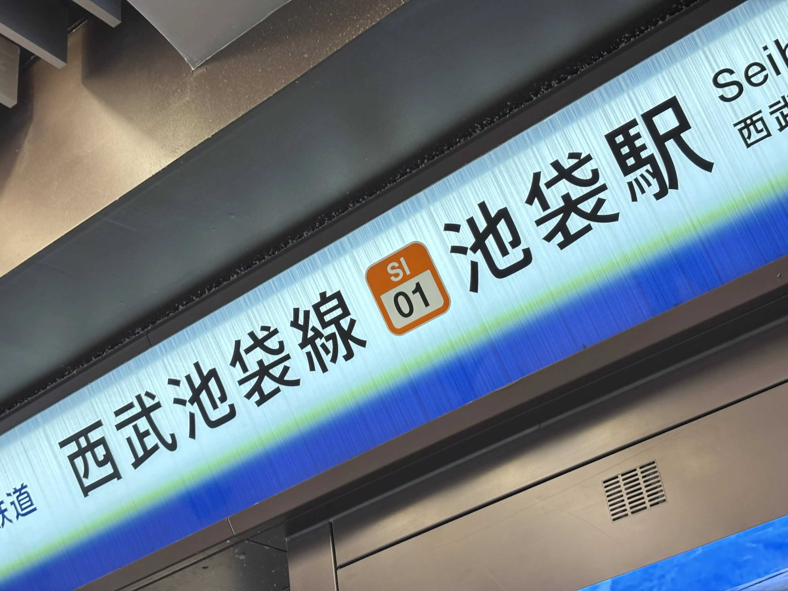
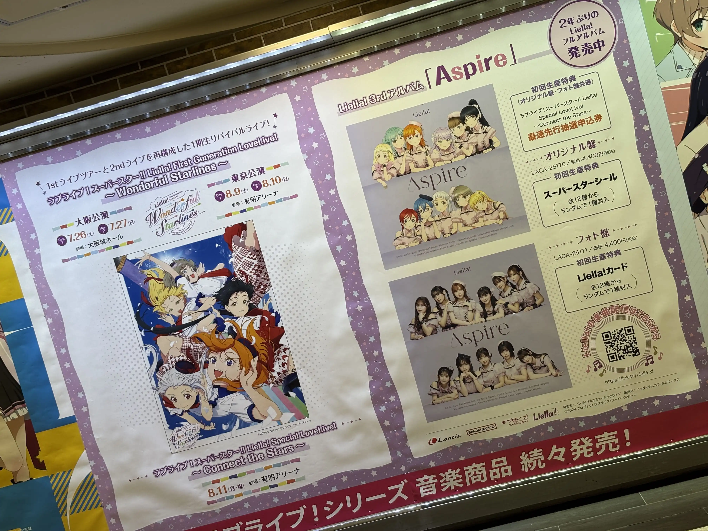
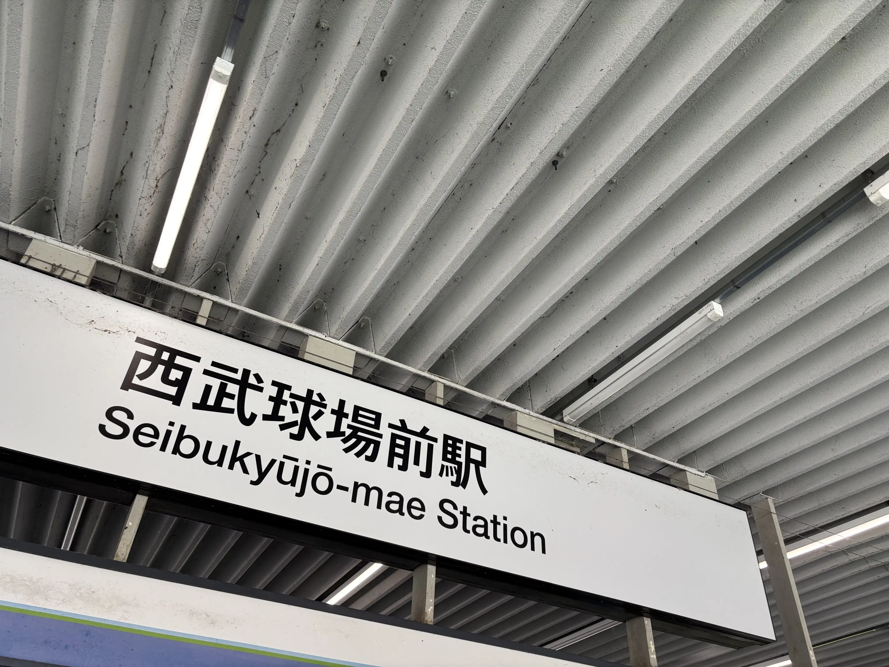
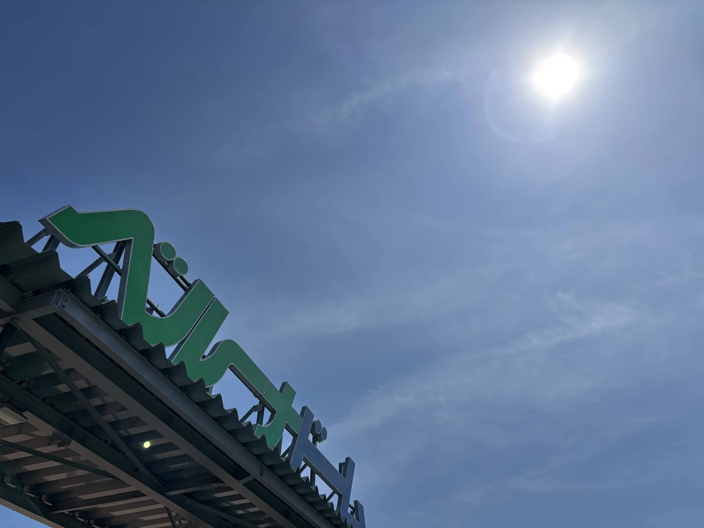
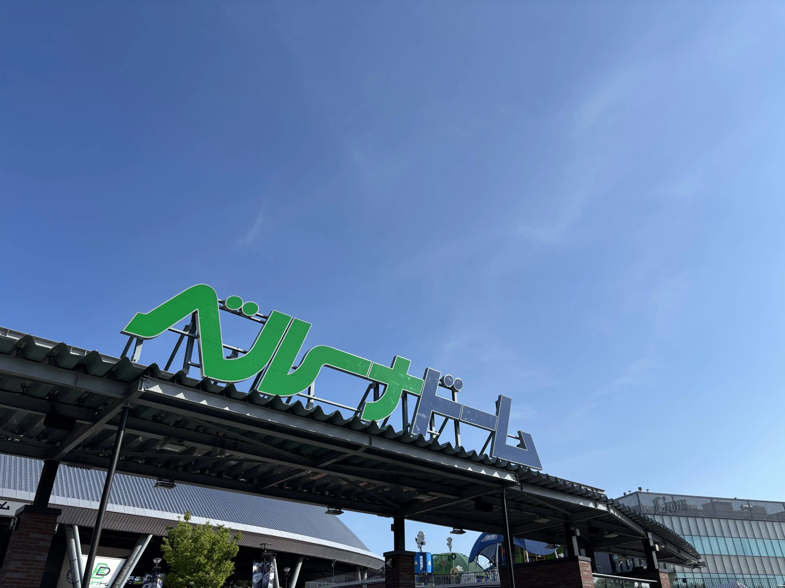
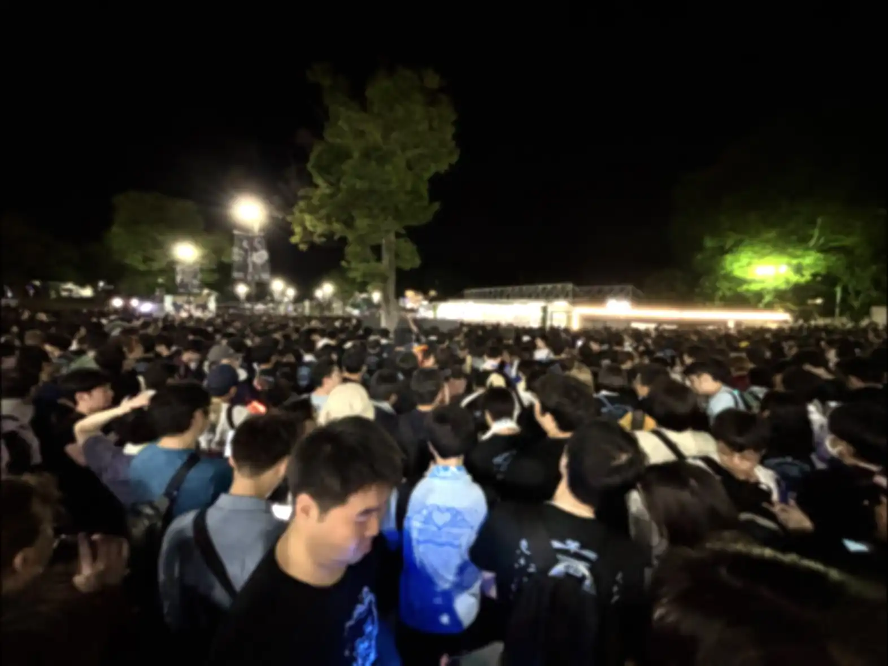

ラブライブ！サンシャイン!! Aqours Finale LoveLive! 永久stageに参加しました。
会場へ行く前に新宿駅の展示を見に。
予想はしていたのですが結構並びました。30分ぐらい。
その後池袋駅へ移動。
？「ｼｬｰｲｸｿﾞ-!!ﾀｲｶﾞｰ!!ﾌｧｲﾔｰ!!ｻｲﾊﾞｰ!!ﾌｧｲﾊﾞｰ!!ﾀﾞｲﾊﾞｰ!!ﾊﾞｲﾊﾞｰ!!ｼﾞｬｰｼﾞｬｰ!!!」
真面目な話2年前にLiella!のライブに初参加した時を思い出しました。
どうやら西武池袋駅構内には展示がある模様。
トイレを済ませ40分程電車に乗り会場着。
当日、都内では33度を超える気温、入場する前に水を1Lも飲んでしまいました…。
さてライブの感想をですね…。
僕はAqoursの単独ライブは初めて。
厳密に言えば、異次元フェスやユニット甲子園では見た事はあったのですが、単独という意味では初めて。
なので最初の降幡愛さんの「今日初めてAqoursのライブに来たよー！って人！」という問いかけには、遠慮無く大声で返事をさせてもらいました…笑
MC関連で言うと、伊波杏樹さんが印象に残りました。言葉にするのがかなり難しいのですが、人を惹き付ける力、心を一瞬で持っていかれるあの感じ。
今から本気で推してもいいですか…？と思ってしまいました。
それと同時に、僕の推しで、Aqoursの後輩に当たるLiella!の事も自然と考えていました。特にセンターであり、僕の推しの伊達さゆりさんについて。
いつかLiella!がFinalないしFinaleライブを実施するとなった際に、伊波さんの様に「人を惹き付ける力」を持ってステージに立てるのだろうか、と思ったのです。
それと同時にそういったタイミングになった時に、楽しかったな、やり残した事なんて無いと僕が言えるのかなとも思いました。
さて、話をAqoursに戻して…。
ライブタイトルにもある通り、このライブはFinale。多くの人にとっては「終わり」というイメージなんだと思います。
でも、僕にとっては今日が「始まり」でした。
Aqoursのライブに初めて触れたこの日が、僕の中のAqoursの1日目。
そう考えると、世界のどこかには、今日、ラブライブ！というコンテンツに触れて、「ライブに行ってみようかな」「曲を聴いてみようかな」「イベントに参加してみようかな」と思っている人が居るという事を考え、それは本当に凄い事なんだなあとしみじみ思いました。
因みに楽曲の話をすると、ふんふん言っている方がスペースでも話していた通り、M7からM8、「Daydream Warrior」から「スリリング・ワンウェイ」の流れが神でした。
勿論「勇気はどこに？君の胸に！」も。
参加して良かったなと思いました。
オマケ。終演後は大変だよネ。
